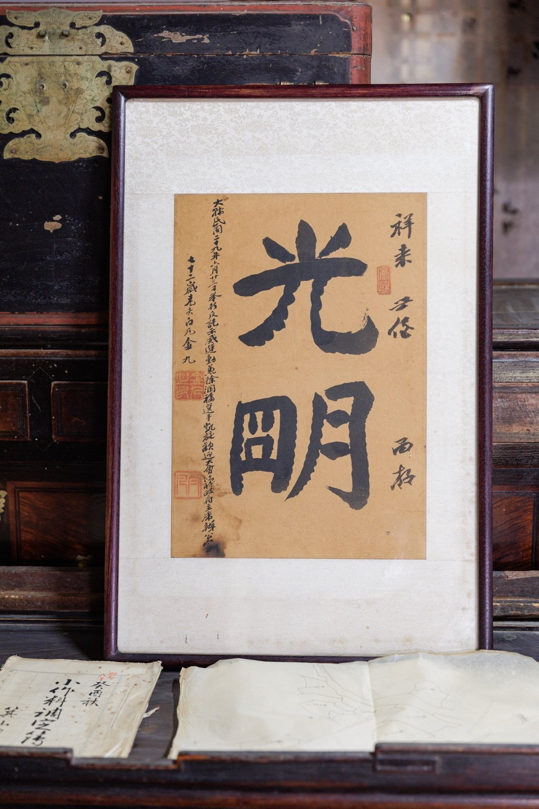

The 1946 Reunion and Gwangmyeong — A Bond Kim Koo Sought Out Again
The Lee Dong-beom Family of Hampyeong: A 128-Year Bond | Part 3
[EN] English edition · Translated from the Korean original · 한국어 원문
The story of the young Baekbeom Kim Koo (also romanized as Kim Gu) staying for about two weeks at the house of "Jinsa Lee" in Hampyeong, South Jeolla Province, in 1898 is preserved in Baekbeom Ilji. But I regard what happened after liberation as just as special as that story. Nearly half a century later, Kim Koo tried to find again the house that had welcomed him. He misremembered one thing, however: he remembered the house as being in Naju rather than Hampyeong.
Not long afterward, the two sons of his old benefactor came to see him in Seoul. This is not a story told only in our family. It is an episode that can also be confirmed in the post-liberation part of Baekbeom Ilji.
1. Honam in 1946
After liberation in 1945, Kim Koo returned to Korea and worked for full independence and national unification. In September of the following year, 1946, he visited many places in the Honam region, meeting residents and giving speeches. The places he visited included Yeosu, Suncheon, Boseong, Mokpo, Hampyeong, Naju, and Gwangju. Related records show that he also gave a speech in Hampyeong on September 23, 1946.
The overall historical background of this tour can also be found in the research of historian Yun Seon-ja.[1] But this visit is special to our family for another reason: Kim Koo still remembered the bond of 1898.
2. Hampyeong Remembered as Naju
It was 1946, forty-eight years after the two weeks spent at Jinsa Lee's house in Hampyeong in 1898 (Part 2). According to the relevant passage in Baekbeom Ilji, Kim Koo tried to find the house where he had once been looked after, but he remembered it as being in Naju rather than Hampyeong.[2]
Interestingly, Kim Koo did in fact visit both Hampyeong and Naju in September 1946. But the record of his visits to both places alone should not lead us to conclude that he went to Naju himself in order to look for his benefactor's house. Two things must be distinguished as historical facts: one is Kim Koo's 1946 tour of Honam; the other is his memory of his old benefactor, and his mistake about the place name, as recorded in Baekbeom Ilji.
What strikes me is that, although he confused the place name over the long years, he still remembered the person who had welcomed him and the bond with that family.
3. The Brothers Who Went to Seoul
By then Jinsa Lee — Seok-am Lee Dong-beom (石庵 李東範, 1869–1940) — had already passed away. But his two sons were alive: the eldest, Lee Jae-seung (李載昇, 1890–1962), and the second, Lee Jae-hyeok (李載赫, born 1893).
The eldest son, Lee Jae-seung, carried on the line of our head family; the second son, Lee Jae-hyeok, is the person whose name remains in the Lee Jae-hyeok House in Hampyeong. The relationship between the two brothers and the two houses is discussed in detail in Part 4. Baekbeom Ilji records, in substance, that after liberation the two brothers came to see Kim Koo in Seoul bearing gifts, and that Kim Koo apologized for having misremembered the place name.[2]
Every time I come across this passage, I think about how deep an impression those two weeks of 1898 must have left. For Kim Koo, it would have been one of countless encounters over a long life. Yet he remembered that encounter nearly fifty years later and renewed the bond with the descendants. Some later publications, meanwhile, state that this meeting took place at Gyeonggyojang.
With the sources confirmed so far, however, it is difficult to establish the exact place and date of the reunion or the specific content of the conversation. In this piece, therefore, I introduce only what can be confirmed in Baekbeom Ilji.
4. Gwangmyeong, 1947
Our family still carefully keeps a treasured object: an original piece of calligraphy, Gwangmyeong (光明, "Bright Light"), handed down as the work of Kim Koo.

In the center of the calligraphy, the two characters 光明 are written large. On the right, the characters 祥來 can be seen. These match the Chinese characters of the name of my grandfather, Lee Sang-rae (李祥來, 1909–1970).
Our family interprets this as an inscription naming Lee Sang-rae as the recipient.[3] On the left are the characters 白凡 金九 (Baekbeom Kim Koo) and seal impressions, and the inscription is read as bearing the date "the 23rd day of the 6th month of the 29th year of the Republic of Korea," corresponding to June 23, 1947.
The inscription is also interpreted as including content related to a welcome event for Suh Yun-bok, who had just won the Boston Marathon. Because there is also a record that Kim Koo produced another piece of calligraphy on June 23, 1947, this provides an important clue for comparing the date and the background of the event.[4]
Here too, however, we need to distinguish the scope of what the record proves. The name and date on the calligraphy are information that can be examined directly on the object itself. They do not, however, establish when, where, or how Kim Koo gave the calligraphy to Lee Sang-rae.
In addition, an independent expert appraisal of the handwriting and seal impressions of the calligraphy held by the family has yet to be carried out. We consider it important both to confirm these matters accurately and to preserve the object in a suitable environment.
5. Between Memory and Record
The bond of 1898 was left in writing in Baekbeom Ilji. In 1946 it was renewed with the sons of his old benefactor. And a Gwangmyeong calligraphy bearing a date in 1947 is handed down in our family. These three are important clues to understanding one family's history. But each record does not necessarily prove every event.
Confirming the stay of 1898 does not tell us where the calligraphy was given in 1947, and the fact that a name interpreted as the recipient appears on the calligraphy does not reveal the circumstances at the time it was given. That is why I intend to compare family memory, documents, and physical materials one by one. I believe that leaving a long-told story behind more accurately is itself a way of treasuring that bond.
A heart that sought out an old benefactor nearly half a century later, and the efforts of descendants to keep that memory to this day: whenever I look at the two characters gwangmyeong handed down in our family, I think of both together. In Part 4, I will look at the relationship between the Lee Dong-beom head family house and the Lee Jae-hyeok House, and at how the main building of the head family house, which has not been sufficiently known, still stands today.
Official interview, Kim Koo Museum & Library [Korean]
https://www.youtube.com/watch?v=a9RnCcFLhq8
Next · Previous
- Part 4 (next): The Head Family House and the Lee Jae-hyeok House — 128 Years in Two Homes https://lsaru23-ai.github.io/hp-db-archive/en/post4.html
- Part 1: Who Was "Jinsa Lee"? — Kim Koo and the Lee Dong-beom Family of Hampyeong https://lsaru23-ai.github.io/hp-db-archive/en/post1.html
- Part 2: Why He Stayed Two Weeks — Hiding in Hampyeong, 1898 https://lsaru23-ai.github.io/hp-db-archive/en/post2.html
Main references
[1] Yun Seon-ja, "Baekbeom Kim Gu's Visits to the Honam Region after Liberation" (해방 이후 白凡 金九의 호남 방문), Journal of Korean Independence Movement Studies (한국독립운동사연구), vol. 59, 2017, pp. 227–259. [Korean]
[2] Baekbeom Ilji, Maewoldang edition, 2025, pp. 336–337: records concerning the 1946 Honam tour and his old benefactor. The original text records the two brothers as jongson (在昇·在赫), but according to the genealogy and a 1917 article they were Lee Dong-beom's sons, 載昇 and 載赫. In our reading, this appears to be an error in the original text.
[3] The original Gwangmyeong calligraphy held by the Lee Dong-beom family, and the Hampyeong Lee Clan Comprehensive Genealogy. A detailed reading of the inscription and an appraisal of the handwriting are subject to further verification.
[4] Independence Hall of Korea, Monthly Independence Hall (월간 독립기념관), December 2021: a study of another calligraphy by Kim Koo dated June 23, 1947. [Korean]
This piece distinguishes facts confirmed directly in documents, readings of materials held by the family, and later tradition. Some content may be supplemented according to additional sources.
This English edition is a translation of the Korean historical archive. The Korean original remains the authoritative version. Documentary evidence, family recollections, and unresolved questions are distinguished throughout.
Chinese characters given in parentheses after names and source titles are supplied for identification; they are not quotations from the original documents unless shown in quotation marks.